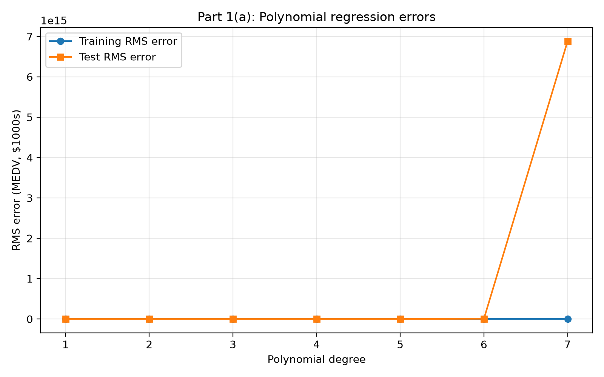
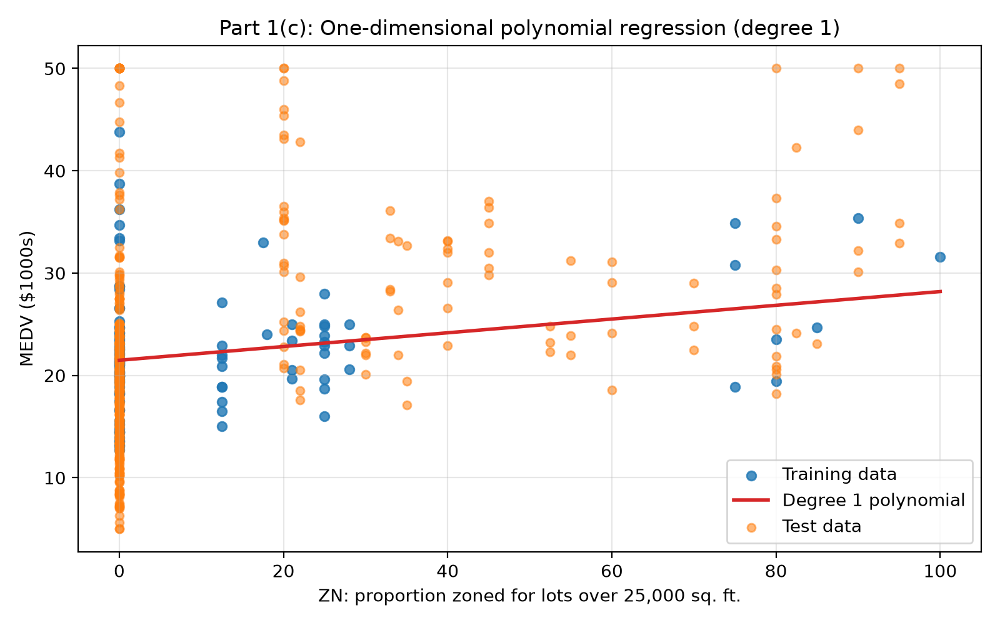
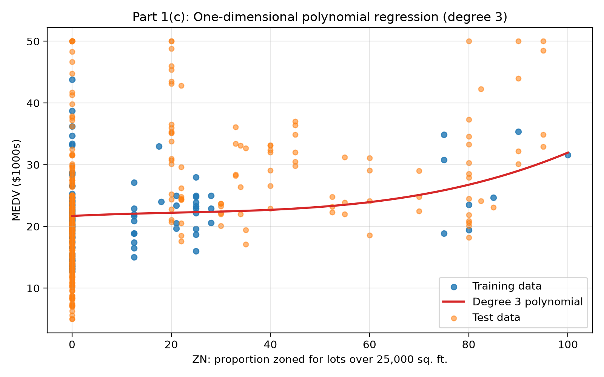
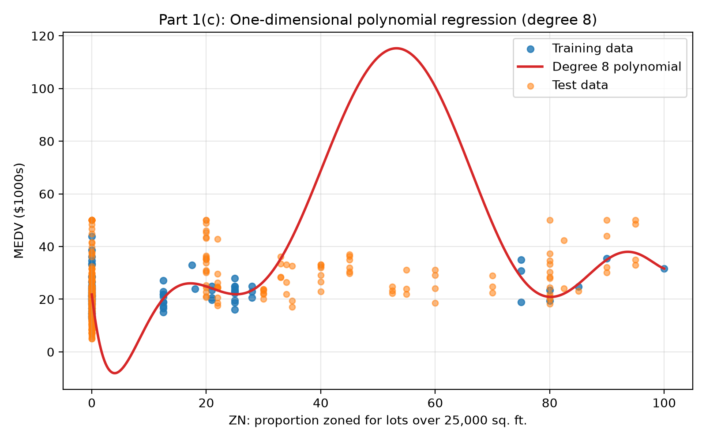
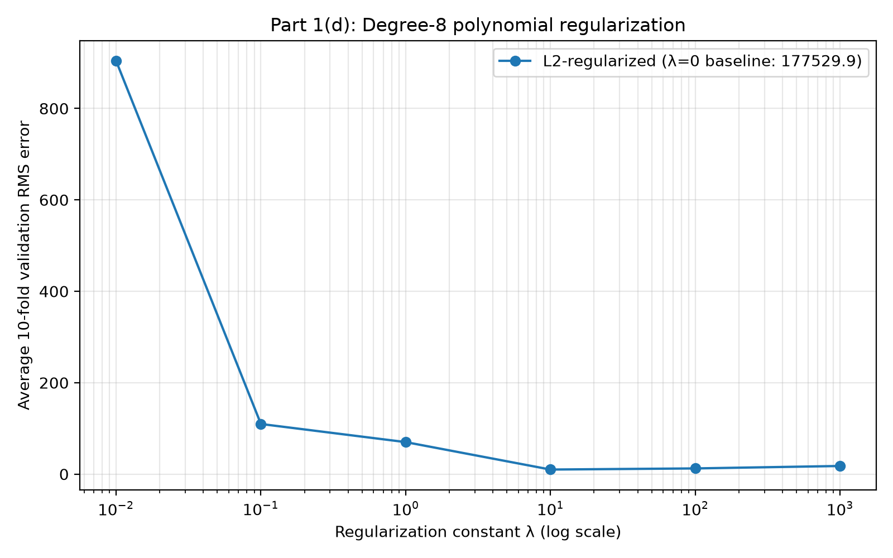
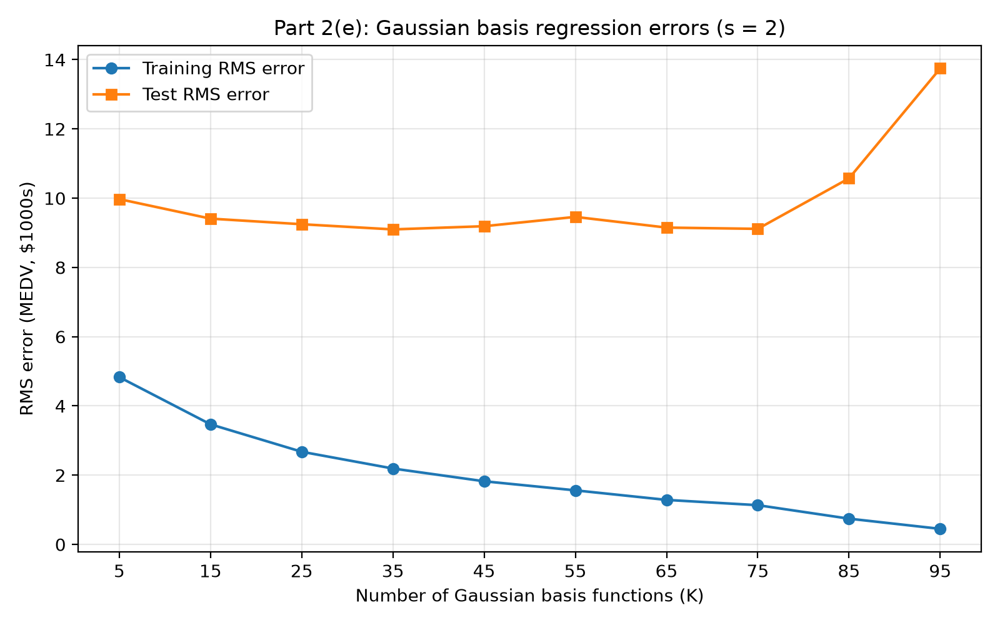
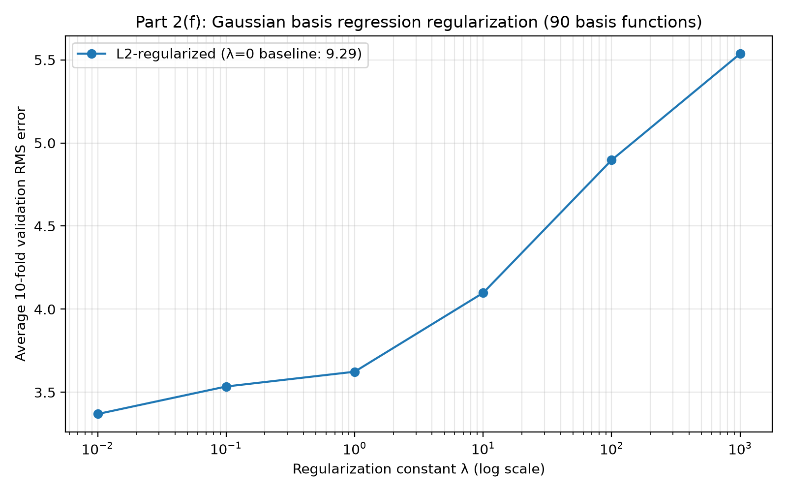

Assignment 2 — Linear Regression
The Boston Housing data are split in their supplied order: the first 100 observations train each model and the remaining 406 observations test it. Predictor normalization uses statistics calculated from training data only.
I fitted polynomial basis regressions of degrees 1 through 7 using all 13 features, without cross-terms or regularization. To make both curves meaningfully interpretable across sixteen orders of magnitude, the plot uses a logarithmic vertical scale. Training RMS error decreases monotonically (from 2.0372 down to 0.8815) as model capacity increases, while test RMS error explodes rapidly (from 36.44 at degree 1 to over 6.88 × 1015 at degree 7). This illustrates extreme overfitting: high-order monomial terms fit the 100 training points tightly, but extrapolate disastrously on unseen test data due to severe numerical ill-conditioning and high variance.

| Degree | Training RMS | Test RMS |
|---|---|---|
| 1 | 2.0372 | 36.4449 |
| 2 | 1.5781 | 1097.1883 |
| 3 | 1.4491 | 48672.8178 |
| 4 | 1.2705 | 21859310.1962 |
| 5 | 1.0966 | 18358040619.9514 |
| 6 | 1.0725 | 5024088561429.9541 |
| 7 | 0.8815 | 6879332103365386.0000 |
The table below lists both the standardized weights (fitted on zero-mean, unit-variance predictors) and the unstandardized weights transformed back into original physical units (wraw,j = wj / σj, with wraw,0 = w0 − ∑ wj μj / σj). Note on indexing: the assignment prompt refers to w5 as the weight on the 6th feature (RM) and asks for the weight on the 8th feature (DIS). This corresponds to 0-indexed feature predictors (x5 for RM and x7 for DIS). When the bias weight is prepended as w0, these correspond to vector indices w6 and w8, respectively. Both are highlighted below:
| Vector Index | Feature Index | Variable Name | Standardized Weight | Unstandardized Weight (Physical Units) |
|---|---|---|---|---|
| w0 | — | Bias (Intercept) | 22.309000 | -37.904200 |
| w1 | x0 (1st) | CRIM | -1.337974 | -3.455946 |
| w2 | x1 (2nd) | ZN | 0.122993 | 0.005382 |
| w3 | x2 (3rd) | INDUS | -0.531065 | -0.168779 |
| w4 | x3 (4th) | CHAS | 0.000000 | 0.000000 |
| w5 | x4 (5th) | NOX | 1.002651 | 21.515396 |
| w6 | x5 (6th, prompt: w5) | RM (average rooms) | 4.195634 | +8.590961 ($/room) |
| w7 | x6 (7th) | AGE | -2.166275 | -0.079237 |
| w8 | x7 (8th, prompt: 8th feature) | DIS (distance to employment centres) | 0.010715 | +0.007627 ($/unit dist) |
| w9 | x8 (9th) | RAD | -0.193778 | -0.139906 |
| w10 | x9 (10th) | TAX | -0.348631 | -0.007630 |
| w11 | x10 (11th) | PTRATIO | 0.261264 | 0.154556 |
| w12 | x11 (12th) | B | 0.181073 | 0.006645 |
| w13 | x12 (13th) | LSTAT | 0.148761 | 0.026230 |
Evaluation of the two weights:
To visualize regression behavior directly, I fitted polynomials using solely the second predictor
(ZN: proportion of residential land zoned for lots over 25,000 sq. ft., corresponding to
Xn(:, 2) in MATLAB notation). Three degrees were selected:



Using only ZN and the first 100 observations, I evaluated L2-regularized degree-8 models across λ ∈ {0, 0.01, 0.1, 1, 10, 100, 1000} using 10-fold cross-validation. The unregularized model (λ = 0) exhibits extreme validation error (177,529.87) due to singular, unconstrained high-power coefficients. Introducing L2 regularization constrains the weights and restores numerical stability. The lowest 10-fold average validation RMS error is achieved at λ = 10 (validation RMS = 9.9839).

| λ | Average 10-Fold Validation RMS |
|---|---|
| 0 (unregularized baseline) | 177529.8719 |
| 0.01 | 903.8370 |
| 0.1 | 109.6656 |
| 1 | 70.0177 |
| 10 (selected) | 9.9839 |
| 100 | 12.4507 |
| 1000 | 17.7869 |
The complete Part 1 source code is available here: part1.py.
Gaussian basis functions take the form φj(x) = exp(−||x − μj||2 / (2s2)) with width parameter s = 2, accompanied by an unpenalized bias unit φ0(x) = 1. The basis centers μj are selected by taking the first K points of a randomly permuted training set.
I fitted unregularized Gaussian basis regression across K ∈ {5, 15, 25, …, 95} basis functions using all 13 standardized predictors. The first 100 observations serve as training data and the remaining 406 as test data. As the number of basis functions K increases, the model capacity expands: training RMS error falls steadily from 4.8316 down to 0.4498. Test RMS error initially improves, reaching its optimal sweet spot around K = 35 (test RMS = 9.0981), before rising to 13.7471 at K = 95. When K = 95, 96 total parameters are fitted on 100 training points, leading to significant overfitting.

| Number of Basis Functions (K) | Training RMS | Test RMS |
|---|---|---|
| 5 | 4.8316 | 9.9727 |
| 15 | 3.4686 | 9.4092 |
| 25 | 2.6760 | 9.2477 |
| 35 (optimal test RMS) | 2.1920 | 9.0981 |
| 45 | 1.8239 | 9.1907 |
| 55 | 1.5617 | 9.4595 |
| 65 | 1.2859 | 9.1505 |
| 75 | 1.1335 | 9.1142 |
| 85 | 0.7441 | 10.5726 |
| 95 | 0.4498 | 13.7471 |
Using all 13 features from the first 100 points, I fitted a model with 90 Gaussian basis functions under L2 regularization across λ ∈ {0, 0.01, 0.1, 1, 10, 100, 1000} using 10-fold cross-validation. Without regularization (λ = 0), the average validation RMS error is 9.2864 due to high variance from fitting 91 parameters on 90 training points per fold. Adding L2 regularization controls the weights and improves generalization: validation error drops significantly to 3.3693 at λ = 0.01. As λ increases further, the penalty becomes overly restrictive and validation error grows steadily. I would therefore choose λ = 0.01 from cross-validation.

| λ | Average 10-Fold Validation RMS |
|---|---|
| 0 (unregularized baseline) | 9.2864 |
| 0.01 (selected) | 3.3693 |
| 0.1 | 3.5348 |
| 1 | 3.6238 |
| 10 | 4.0980 |
| 100 | 4.8971 |
| 1000 | 5.5366 |
The complete source code is available here: part1.py | part2.py.